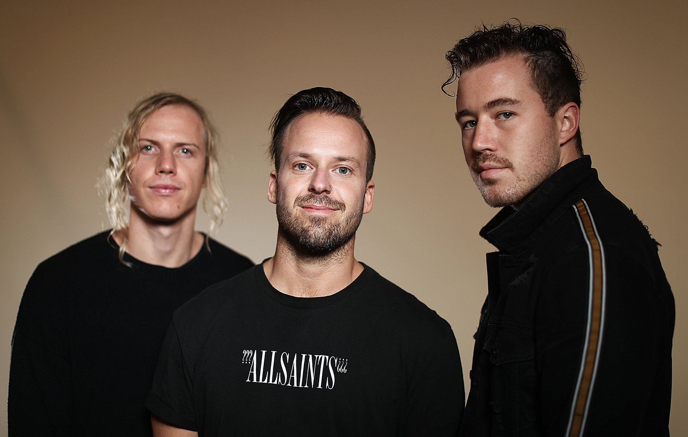

RÜFÜS DU SOL
Es una banda de música electronica originada en Sidney Australia formada en el 2010. el grupo esta compuesto por Tyrone Lindqvist en la vox y la guitarra, Jon george en los teclados y James Hunt en la bateria.
La banda saltó a la fama en 2013 con el lanzamiento de su álbum debut "Atlas", el cual recibió una gran acogida tanto en Australia como en el resto del mundo. Desde entonces, RÜFÜS DU SOL ha seguido produciendo música de alta calidad, caracterizada por su sonido único y emocional, que fusiona elementos de la música electrónica, el indie y el pop
Además de su éxito en la industria musical, RÜFÜS DU SOL ha sido aclamado por sus impresionantes presentaciones en vivo, las cuales se han ganado la lealtad de sus seguidores en todo el mundo. La banda ha recorrido el mundo con su música, ofreciendo shows en algunos de los festivales más importantes del planeta
Con una discografía que abarca tres álbumes de estudio y múltiples sencillos, RÜFÜS DU SOL se ha consolidado como uno de los grupos más interesantes y emocionantes de la escena musical actual.
RÜFÜS DU SOL MIX